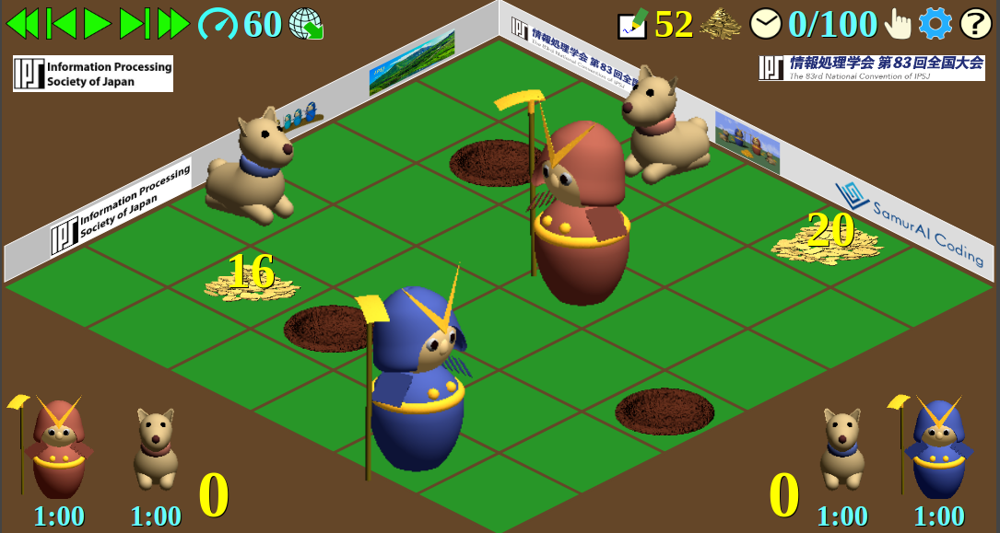

情報処理学会プログラミングコンテスト委員会
2020/12/07
この文書は情報処理学会主催の SamurAI Coding 2020-21 コンテストの対象である SamurAI Dig Here 2020 ゲームのルールを述べるものである.
ゲームは 2 チーム間で競う零和不完全情報ゲーム, 競技参加者によるプログラムで制御する各 2 エージェントが競い合うものである. ゲームの目的は競技の場に隠されている埋蔵金をより多く掘り出すことである.
競技場は正方形で, 正方格子状に並ぶ小正方形 (セル) に分かれている. 競技場のサイズ, すなわち競技場の一辺に並ぶセルの数はゲームごとに異なる. サイズは最小 6 最大 20 である.
右図は正方形の競技場を斜め方向から俯瞰したものである.
両チームにはそれぞれ 2 体のゲームエージェント, 侍と犬がある.
ゲームエージェントは競技者が提供するプログラムで制御する. 同じチームの犬と侍は同じプログラムが動くふたつのプロセスで制御し, 両プロセス間の通信はゲーム管理システムを介したものだけで, 他の通信手段はない.
ゲーム開始時にはエージェントは競技場内の別々のセル上にある. ゲームを通して複数のエージェントが同時に同じセル上に来ることはない.
ゲームの 1 ステップごとに, 犬エージェントはその 8 近傍セル, すなわち現在のセルと 4 隅のひとつかふたつを共有するセルに動くことができる. 侍エージェントはゲーム開始直後のステップと休憩した直後のステップでは 8 近傍セルのどれにでも動けるが, それ以外のステップでは現在のセルと 4 辺のいずれかを共有する 4 近傍セルにしか動けず, 斜め方向の 4 セルには動けない. 現在のセルから動かないこともできる.
ふたつ以上のエージェントが同じセルに動くよう指示された場合など, 指示が無効となる場合はどちらも動くことはできず, 元の位置に留められる. 詳細はプレイプランの有効性判定の節に記す.
競技場内のセルには穴があることもあり, そこにはエージェントは動けない. 侍エージェントは動く代わりに, 近傍セルのひとつにある穴を埋めたり, 近傍セルのひとつに新たな穴を掘ることができる. ゲーム開始直後と休憩した直後のステップでは 8 近傍セルのどれでもひとつの穴を埋めたり新たな穴を掘ったりできるが, そうでないステップでは 4 近傍セルだけを対象とできる また, ステップ開始時に既に他のエージェントがいたり, 掘ろうとする同じステップで他のエージェントが動いてきたセルには穴を掘れない.
エージェントの初期位置に穴はない.
競技場内のセルには埋蔵金が埋められていることがある. 埋蔵金のあるセルに穴を掘ると, 埋蔵金を掘り出すことができる. 両チームの侍が同時に同じセルに穴を掘った場合は, 埋蔵金は両チームが半分ずつ獲得することになる. なお, 埋蔵金の量は常に偶数で, その総量が 109 を超えることはない.
犬は埋蔵金のあるセルの 8 近傍セルに来ると, 埋蔵金の位置と量を感知することができる. その情報は他のエージェントには伝えられない. 犬が埋蔵金のあるセルそのものに来ると, 犬は吠え, 埋蔵金の位置と量とは全エージェントの知るところとなる. 同じチームの侍だけでなく, 相手チームの侍や犬にも吠え声は聞こえてしまう.
エージェントの初期位置や穴のあるセルには埋蔵金がない.
ゲームはステップ単位で進行する. ステップ開始にあたって, 全エージェントは同時にそのステップのプレイプランを立てる. 全エージェントのプランの有効性や衝突をチェックして, 各エージェントの行動を決定する. 決定した行動にしたがって競技の状態を更新する.
ステップ数があらかじめ決めた最大値に達するか, すべての埋蔵金が掘り尽くされるまで, このゲームステップを繰り返す.
競技参加者は自チームのふたつのエージェント, 侍と犬を制御するプレイヤプログラムを用意する.
ゲームの開始に当たってゲーム管理システムは, 両チームについてふたつのプレイヤプロセスを起動する. 各チームふたつのプレイヤプロセスは同じプログラムを実行するが, ひとつは侍を, ひとつは犬を制御する. 制御するエージェントは起動後にゲーム管理システムから通知される.
プレイヤプロセス同士の通信はゲーム管理システムを介したものだけで, 他の通信手段はない.
ステップの開始時にゲーム管理システムはゲーム状態情報を各プレイヤプロセスに送る. プレイヤプロセスはこれを受け取って, 担当するエージェントのプレイプランを返答しなければならない.
プレイヤプロセスはゲーム管理システムからのゲーム状態情報は標準入力から読み込む. これに対する返答のプレイプランは標準出力に書き出す.
プレイプランは各プレイヤプログラムが送ったエージェントの動作案で, 行動はゲーム管理システムがそれらを照合して調整した結果, 実際に各エージェントがとる動作である.
競技場の状態だけから実行できないとわかるプレイプランは不正であるという. 競技場の状態だけからは実行できるかもしれなかったが, 他のエージェントの動きとの干渉のために実行できないプレイプランは無効であるという. たとえば, 穴のあるセルに移動しようとするプランは不正であり, ふたつのエージェントが同じセルに移動しようとするプランは無効である.
不正なプレイプランも無効なプレイプランも実際には行われない. 両者の違いは不正なプレイプランは休憩とまったく同様に扱われる点にある. 無効なプレイプランはそのままゲーム状態情報のゲームプランの項目に反映されるが, 不正なプレイプランは休憩と記録される. これは不正プレイプランによるエージェント間の情報交換を防ぐためである. このため侍は, 休憩を指定したステップとまったく同様, 不正なプレイプランを指定したステップの直後のステップでも斜め方向の移動や穴掘り穴埋めができる.
プレイプランや行動は以下の意味を持つ整数値 m (-1 ≤ m ≤ 23) で表す.
| x−1 | x | x+1 | |
|---|---|---|---|
| y−1 | 3 | 4 | 5 |
| y | 2 | 6 | |
| y+1 | 1 | 0 | 7 |
犬は穴掘り, 穴埋めができない. 犬のプレイプランが −1 以上 7 以下の整数でなければ不正である.
競技場外の方向への移動, 穴掘り, 穴埋め, 穴があるセルの穴掘り, 穴のないセルの穴埋め, ステップ開始時に他のエージェントがいるセルへの移動や穴掘り・穴埋めは, いずれも不正である.
不正ではないプレイプランであっても, 他のエージェントのプレイプランとの干渉により無効となる場合がある. 詳細は次節に記す.
プレイプランが有効性の判定は, 以下の手順に従う.
右図に示す配置のときに以下のプレイプランを指定したとする.
各ステップの開始時に, ゲーム管理システムからプレイヤプロセスにゲーム状態情報を送る. ゲーム状態情報は以下の各項目がこの順に並ぶものである.
ゲーム状態情報の要素はすべて整数である. 前述の箇条書の各項目の間は改行で区切り, 項目内の整数の間は空白で区切る. 最後の要素の後には改行が置かれる.
上述の項目でリストと記したものは, 先頭にリスト要素の個数 (整数値) が来る. リストが空なら 0 である. その後にリストの各要素の記述が続く. 各要素はひとつ以上の整数値である.
位置はセルのx-座標とy-座標のふたつ組で表す. 座標値は非負整数で, 競技場のサイズより小さい. 埋蔵金は整数値みっつで表す. 最初のふたつは埋蔵金のあるセルの座標で, みっつ目は埋蔵金の量である. 埋蔵金の量は必ず非負の偶数である.
| 3 | // エージェントの番号 |
| 10 | // 競技場のサイズ |
| 1 | // ステップ番号 |
| 100 | // 最大ステップ番号 |
| 6 5 1 7 3 7 0 8 1 6 0 5 2 | // 穴のあるセルの位置のリスト |
| 1 6 6 6 | // 公知の埋蔵金 |
| 1 2 7 8 | // 感知した埋蔵金 |
| 9 6 2 4 5 3 1 6 | // エージェントの位置 |
| 0 0 7 7 | // 直前ステップでのプレイプラン |
| 0 0 7 7 | // 直前ステップでの行動 |
| 0 0 | // スコア |
| 50 | // 残る埋蔵金 |
| 299941 | // 残る考慮時間 |
ゲーム状態情報の例を右図に示す. "//" から以降はここでの説明のためのもので, 実際にプレイヤプロセスには送られない.
プレイヤプログラムはゲーム状態情報を読んだら, それに応じて対応するエージェントのプレイプランを出力する. プレイプランは整数値ひとつで, その意味は上述のとおりである. プレイプランの後には改行がなくてはならない.
プレイヤプロセスの考慮時間には制限が設けられる. 考慮時間とはゲーム管理システムがプレイヤプロセスにゲーム状態情報を送ってから, その返答であるプレイプランを受け取るまでの時間のことである. これは実際の経過時間であって CPU 時間ではないことに注意. 各ステップの考慮時間は累積され, その総計に対して制限が課せられる.
考慮時間制限はプレイヤプロセスごとに設ける. 同じチームの侍と犬の考慮時間は別々に累積される.
考慮時間制限を越えたプレイヤプロセスは, その後の全ステップにおいて −1 (休憩) をプレイプランとして選択したものとみなされる.
考慮時間制限の値はゲームごとに定める.
2 チームの間の試合は, 同じ初期状態でエージェントの配置だけを交換した 2 ゲームで競う. 試合の勝敗は 2 ゲームを通じて掘り出した埋蔵金の総量で判定する.